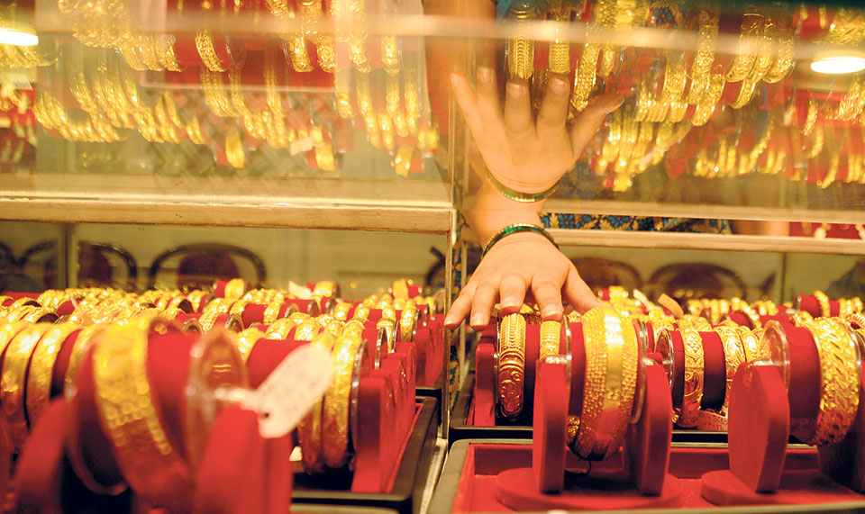
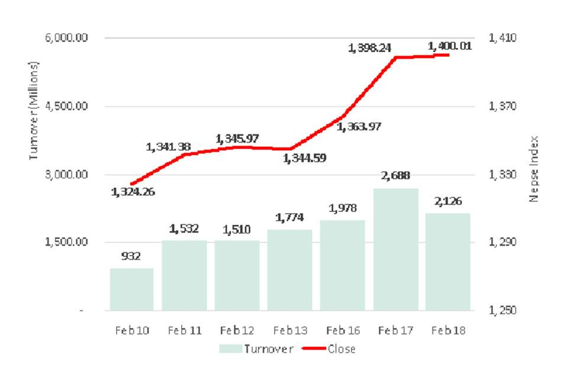
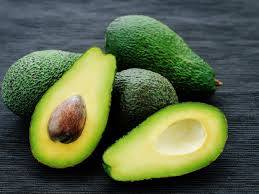

KATHMANDU, Feb 19: The price of gold marched to a fresh high of Rs 76,700 per tola (11.664 grams) in the domestic market on Tuesday.
The yellow metal was traded at Rs 76,500 per tola on Monday, but gold price went up by Rs 200 per tola on Tuesday morning, according to the Federation of Nepal Gold and Silver Dealers' Associations that fixes the price of yellow metal in the domestic market.
Dharma Sundar Bajracharya, general secretary of the federation, told Republica that the sudden rise in gold price in the international has taken him by surprise. "We were expecting bullion prices to fall due to the recent outbreak of coronavirus. But it seems that investors are taking gold as a safe haven. People of Europe and the US are investing in gold which caused the prices to go up," he added.
The price of gold has been rising steadily in the domestic market since July, 2019, with occasional drops. The previous high of Rs 76,500 per tola was set in January.
Meanwhile, traders say that the demand for gold has fallen even during wedding season due to high prices. They say demand has fallen from average daily demand for 50 kg.
“There is high chance that the price will increase further in the coming days. But good thing is, people have stated realizing that gold price will remain more or less in the current range," he added. "We expect the demand to pick up gradually."
Wedding season is one of the main seasons for gold purchase in Nepal after Teej and Deepawali festival, according to jewelers. "We are getting wedding shoppers. But most of them have reduced their gold purchase," added Bajracharya.
Nepse above 1,400 points for first time in 22 months

KATHMANDU: Nepal Stock Exchange (Nepse) index shot up by 18 points in the morning as strength carried over to Tuesday's trading. However, sellers took over the latter trading session with the index declining steadily to trade briefly in red in the last trading hour. A slight recovery toward the close meant the benchmark index ended the day 1.77 points at 1,400.01 points.
After a rally of over 55 points in three trading days, the index closed above 1,400 points mark for the first time in roughly 22 months. The recent rise was fueled mainly by heavyweight commercial banks adding to its gains whose movement is key in determining the course of market capitalization-based Nepse index. Development Bank sector also followed suit. However, the buying pressure remained a little subdued compared to Monday's trading session. In the meantime, breach of 1,400 points will be a crucial psychological event for the secondary market. The bourse might see more upbeat movement if the index manages to hold ground firmly above the current mark. Further, market activity crossed Rs 2 billion for a second day in a row, suggesting that the market is unlikely to lose steam any time soon.
Sectors witnessed mixed movement on the day. While few segments saw modest correction, remaining others ended the day in green. Mutual Fund sub-index added 1.96%. Manufacturing & Processing sector stretched its gaining streak with a 1.15% advance. Development Bank, Banking and Trading sub-indices also closed in positive territory. On the other hand, Hotels and Hydropower sectors led the losses dropping roughly 1.70% each. Finance, Life Insurance, Microfinance, 'Others;' and Non-Life Insurance segments also ended the day marginally lower.
Shares of NIC Asia Bank Ltd and NMB Bank Ltd were traded heavily in the market with total transactions of Rs 106 million and Rs 95 million. Himalayan Distillery Ltd and Shivam Cements Ltd were next o the list with turnovers of Rs 91 million and Rs 76 million, respectively. Nepal Life Insurance Company Ltd, Shine Resunga Development Bank Ltd and Shikhar Insurance Co Ltd were among other active stocks of the day.
Leading the gains was Kalika Laghubitta Bittiya Sanstha Ltd whose price shot up by 10% on the first day of joint trading after successful merger with Janasewi Laghubitta Bittiya Sanstha Ltd. The latter went for merger shortly after issuing Initial Public Offering (IPO) in May 2019. Likewise, share price of Ghalemdi Hydro Ltd rallied 9.52% to Rs 69 per share. Shine Resunga Development Bank Ltd also saw its share price jump by 7.17%, while share prices of Mountain Hydro Nepal Ltd, Rastriya Beema Company Ltd and Bottlers Nepal Terai Ltd closed up by over 4% each.
Shares of Laxmi Laghubitta Bittiya Sanstha suffered the most shedding over 5%. Panchthar Power Company Ltd, subsequently, saw its share price fall by 4.51%. Finance companies joined the list of major decliners as Central Finance Company Ltd, Guheshwari Merchant Bank & Finance Co Ltd and Nepal Finance Ltd posted losses of over 3% each. Nepal Seva Laghubitta Bittiya Sanstha Ltd, Sanima Equity Fund and NLG Insurance Company Ltd were among other losing scrips.
Technical analysis of ARKS suggests that the market witnessed some correction in the day following heavy gains on Monday and Tuesday morning. Consequently, the index settled closed to its opening level. Some indecision is evident but the outlook remains bullish. With formation of a Moving Average Convergence Divergence (MACD) bullish cross, the trend for the short term stays upbeat. Most importantly, the index is still in its psychological resistance mark of 1,400 points where the market might witness some consolidation. Hence, gauging the market's movement at this level can suggest a possible direction of the secondary market.
Dhankuta farmers falling in love with avocado

ITAHARI, Feb 18: Dhankuta district was famous for exporting toothsome orange creating its niche market among consumers in the eastern Terai and also in adjoining Indian markets of Bihar and West Bengal. Once a synonym of orange production in eastern hills of Nepal, Dhankuta, of late, is turning to a brand new exotic fruit - avocado.
Brought in the district by researchers and visitors of Europe in the UK-funded Pakhribas Agriculture Research Centre some three decades ago, the nutrition-rich fruit, believed to have originated in Mexico, is being rapidly promoted in Dhankuta by local governments since two and half years.
Dhankuta Municipality has taken a lead in this entrepreneurial endeavor of agroforestry.
Why Dhankuta switched from orange to avocado? The mayor of Dhankuta Municipality Chintan Tamang has an easy answer. ''Due to several reasons like climate change and the likes, our orange production in the district depleted and we sought experts' advices to replace the possible loss,'' said Tamang, who has officially hired an agricultural expert.
Municipality encouraged locals to plant avocado saplings. In order to help farmers about basic knowhow of avocado, municipality published a book, authored by an agriculture expert Jiwan Rai, detailing commercial avocado farming.